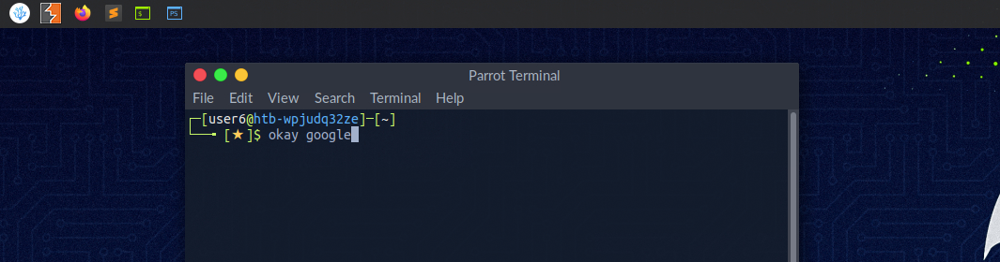
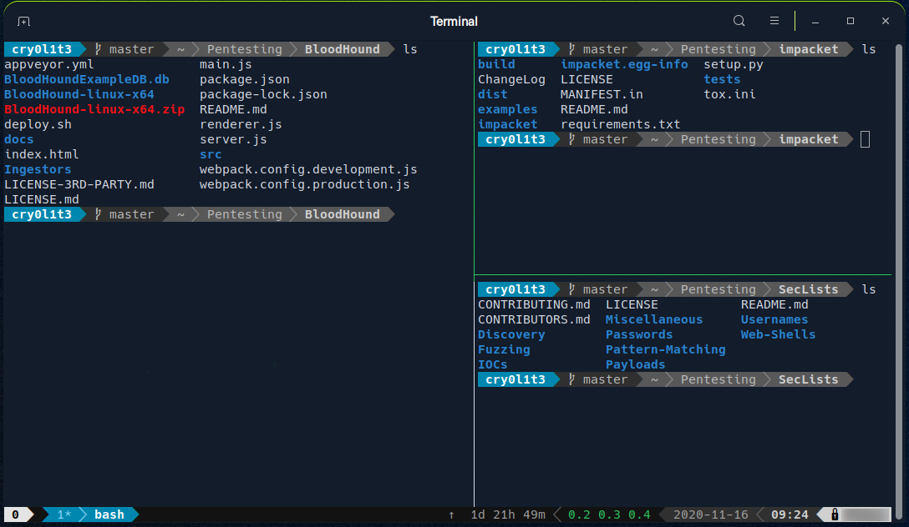

It is crucial to learn how to use the Linux shell, as there are many servers based on Linux. These are often used because Linux is less error- prone as opposed to Windows servers. For example, web servers are often based on Linux. Knowing how to use the operating system to control it effectively requires understanding and mastering Linux’s essential part, the Shell. When we first switched from Windows to Linux, does it look something like this:
A Linux terminal, also called a shell or command line, provides a text-based input/output (I/O) interface between users and the kernel for a computer system. The term console is also typical but does not refer to a window but a screen in text mode. In the terminal window, commands can be executed to control the system.
We can think of a shell as a text-based GUI in which we enter commands to perform actions like navigating to other directories, working with files, and obtaining information from the system but with way more capabilities.
Terminal emulation is software that emulates the function of a terminal. It allows the use of text-based programs within a graphical user interface (GUI). There are also so-called command-line interfaces (CLI) that run as additional terminals in one terminal. In short, a terminal serves as an interface to the shell interpreter.
Terminal emulators and multiplexers are beneficial extensions for the terminal. They provide us with different methods and functions to work with the terminal, such as splitting the terminal into one window, working in multiple directories, creating different workspaces, and much more. An example of the use of such a multiplexer called Tmux could look something like this:
he most commonly used shell in Linux is the Bourne-Again Shell (BASH), and is part of the GNU project. Everything we do through the GUI we can do with the shell. The shell gives us many more possibilities to interact with programs and processes to get information faster. Besides, many processes can be easily automated with smaller or larger scripts that make manual work much easier.
Besides Bash, there also exist other shells like Tcsh/Csh, Ksh, Zsh, Fish shell and others.